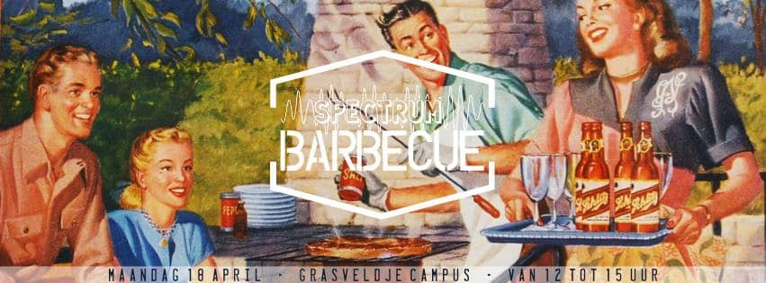

Activiteiten
Deze fijne activiteiten kunt u bijwonen tijdens de campagneweek van Spectrum:
| Datum | Tijdstip | Locatie | |
|---|---|---|---|
| Star Bars | Woensdag 13 april | 22u00 | 't RC |
| Donderdag 14 april |
10u30 20u00 |
Grasveld, Campus Arenberg III 't RC |
|
| Spek en ei eetstand | Vrijdag 15 april | 10u30 | Grasveld, Campus Arenberg III |
| LAN Party | Zondag 17 april | 21u00 | 't RC |
| Maandag 18 april |
12u00 20u00 |
Grasveld, Campus Arenberg III Pavo |
|
| Efteling themadag | Dinsdag 19 april | 10u30 | Grasveld, Campus Arenberg III |
| Spek en rum bar | Woensdag 20 april | 22u00 | 't RC |
Star Bars
A long time ago in a galaxy far, far away...
Spectrum Barteam presenteert: Star Bars. Op Woensdag 13 april trappen we de campagne af met een Winabar in het thema Star Wars. we nodigen jullie dan ook graag uit om vanaf 22u te komen feesten in 't RC onder Alma 3.
May the force be with you!

Hotdog en soep eetstand
Net wakker geworden na de Star Bars met een kater en beseft dat je niets hebt om te ontbijten op je kot? Geen nood, wij hebben de perfecte oplossing voor je! Spectrum heeft zijn beste chef-koks erop uit gestuurd om de meest verse groentjes, krokantste broodjes en hotdogs uit het hele koninkrijk te verzamelen! En wat is hier uit voortgevloeid? Een heerlijk eetfestijn van hotdogs en soep! Omstreeks 11u kunnen jullie terecht op de campus voor dit eetfestijn tegen dumpingprijzen. We staan in ieder geval paraat om jullie het ontbijt/middagmaal/katerkost van jullie leven te bezorgen!
Tot dan!
Karaoke avond
Vind jij het ook zo jammer dat er geen karaokebar is in Leuven? Zing jij ook eens graag iets dat niet in je codex staat? Of heb je gewoon zin om op je wenken bediend te worden en heerlijke cocktails te drinken? Kom dan zeker donderdagavond naar het RC, die omgetoverd zal worden tot een heuse karaokebar! Piece de resistance van de avond is natuurlijk de karaokemachine, maar als die bezet is, zijn er nog genoeg andere mogelijkheden! Zo zullen er enkele kleinere schermen zijn waarop je tegen je vrienden kan strijden in een heuse zangbattle.Verder zullen onze obers u maar al te graag bedienen met hapjes, cocktails, milkshakes, of een pintje. Wil je er zeker van zijn dat je favoriete schijf aanwezig is? Stuur dan een mailtje naar spectrum-karaoke@wina.be of post het hier.
Smeer je stembanden alvast en tot donderdag!
Spek en ei eetstand
Is je voorraad eten tegen vrijdag meestal bijna op? Geen nood! Spectrum voorziet je van een eetstand helemaal in het thema van eitjes. Verloren brood, eitjes, spek met ei, frisdrank, water en bier. Kortom, alle ingrediënten om de maag goed te vullen. Kom gezellig langs op vrijdag vanaf 10u30 op het grasveldje aan de campus.
Tot dan!
LAN Party
LAN-parties, daar kunnen we wat van! Verstokte game-veteranen verlaten ’s avonds hun kot, om te gamen tot een kot in de nacht. Een hoop vertier, groepsgevoel en hilariteit is verzekerd. Hoewel de aangesproken groep altijd talrijk is, mankeert er vaak diversiteit. Met onze geeky LAN-party willen we hier verandering in brengen. Er zal gegamed worden in de brede zin van het woord. Bordspellen zullen aanwezig zijn en, voor de enkelingen die durven,zelfs een DnD-campaign. Voor een aantal fanatiekelingen die graag highscores breken zullen er arcade-games aanwezig zijn. Natuurlijk blijven de concepten van een gewone LAN-party nog steeds aanwezig. PC-gamers zullen er bij de vleet zijn. Toernooien voor zowel LoL als 'Age Of ...' zullen worden georganiseerd. Een Wii zal ook nog steeds ter plaatse zijn, waarop samen gegamed kan worden. Mis deze boel jolijt zeker niet op 17 april, vanaf 21u in 't RC!

BBQ eetstand
Maandag 18 april wordt een stralende dag, een prachtige dag, een dag voor barbecue! En wie barbecue zegt, zegt uiteraard lekkere vlezekes en heerlijke groenteburgers! Wij halen er voor jullie graag de schoonste collectie vlees en groentjes bij om een heerlijke middag ineen te steken. Uiteraard voorzien wij ook entertainment van de hoogste orde. Ons jungle-thema is de ideale setting voor een reuze, real life jungle speed en andere beestige spelen. Kom allen zeker af vanaf 12u voor gevulde buikjes en gegarandeerde pret!
Bestel hier:
Expeditie Robinson Cantus
Drie coronae, drie kampen.
Gedurende de cantus moeten de 80 deelnemers strijden om te overleven. Om in de expeditie te blijven zullen de verschillende kampen tegen elkaar moeten opboksen in bloedstollende eliminatieproeven. Wie te zwak blijkt te zijn of zich misdraagt, zal zonder medelijden als schacht naar het verliezerseiland gestuurd worden en daar moeten zien te overleven onder toezicht van een wilde inboorling.
Denk jij het survivalinstinct in je te hebben? Ben je zeker dat je een winnaar kan zijn? Of word je door de eilandraad weggestemd?
“Hasta la pasta!” - Kenny, expeditie Robinson 2007
Schrijf je hier in:
Efteling themadag
Er was eens, niet zo heel lang geleden, een wonderlijk mooie prinses genaamd Carolyne. Ze heerste over het sprookjesdorp, een wereld vol wonderen! Haar dorp werd echter geterroriseerd door de Grote Boze Wolf, een kwaadaardig schepsel dat veel sprookjesfiguren lastigviel en oppeuzelde...
Maar vrees niet! De dappere prins Fanne heeft het vuile beest nu verslagen met de hulp van de helden van Spectrum! Om dit te vieren, nodigen we jullie graag uit in ons sprookjesdorp, op de Efteling-themadag! Kom chillen in onze fabelachtige lounge waar elk uur de mooiste sprookjes zullen worden voorgelezen. Of ga de uitdaging aan en word een echte piraat op ons schommelschip! Als je meer iemand bent die vooral graag eet en drinkt, kom dan zeker langs op de eetstand, waar we lekkere Grote Boze Wolf met frietjes (lees: friet stoofvlees) en suikerspinnen zullen verkopen.
Kortom: trek je stoutste zevenmijlslaarzen aan en vergezel ons dinsdag 19 april op de campus voor de themadag!
Spek en rum bar
Spectrum? Spekrum? Spek en rum! Met deze woordspeling gaat Spectrum (hopelijk) haar overwinning vieren. Om klokslag 12 uur beginnen wij met spek en rum naar jullie hoofd te smijten ‘tot het gene naam meer heeft’. Ons geliefde RC zal onderdak bieden aan het foutste overwinningsfeestje van Leuven!
Importeer hier de evenementen van Spectrum in je Google Calendar: